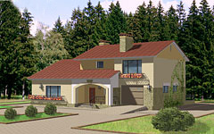
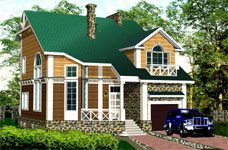

Архитектурный проект дома из бруса. Небольшой, но очень уютный загородный дом.

Проект H-173-1P
Дом двухэтажный, с двускатной кровлей.
Проект R-189-1P
Удобный коттедж для постоянного проживания небольшой семьи. Внизу – помещения общего пользования...Габариты: 11000х9800
Стены: дерево
Габариты: 12600х8400
Стены: пенобетон
Габариты: 12000х13000
Стены: пенобетон

Проект V-208-1P
Не очень большой, но очень уютный дом для всей семьи, подходящий как для города, так и для дачи...
Проект B-213-1P
Проект таунхауса.
Проект N-217-1K
Когда участки под застройку небольшие, проблема вновь строящихся домов - близость соседних.Габариты: 15900х12000
Стены: пенобетон
Габариты: 13140х12060
Стены: пенобетон
Габариты: 8540х7500
Стены: кирпич

Проект R-265-1P
Сблокированный дом на две семьи. Площадь 265.0 м2, кроме того площадь мансардного этажа 58.6 м2.
Проект R-280-1D
Деревянный проект из бруса с гаражом на 1 а/м.
Проект R-280-1K
Оптимальный вариант для семьи из 4-5 человек. Рабочий проект разработан в двух вариантах...Габариты: 18000х10200
Стены: пенобетон
Габариты: 10500х14500
Стены: дерево
Габариты: 10500х14700
Стены: кирпич